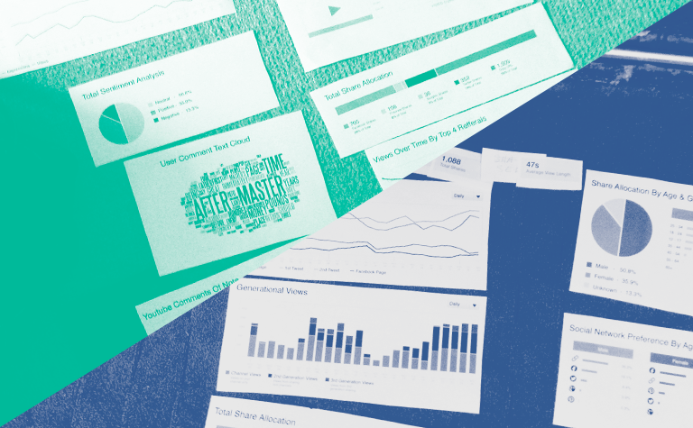
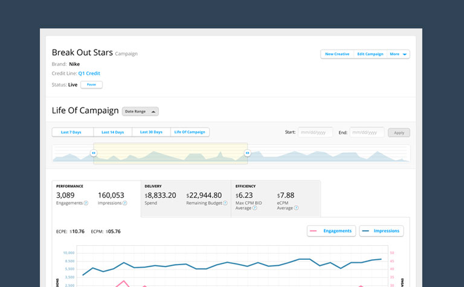
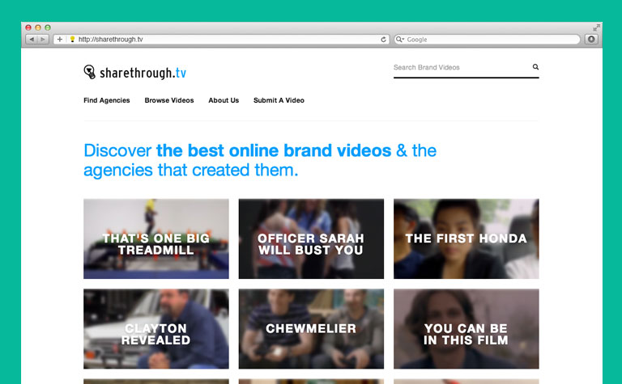

I was the in-house UX designer at Sharethrough from 2011-2013. Having almost no experience in the ad industry, I had to jump in headfirst to a world where time is money and every eyeball you’re designing for has a dollar sign attached. During my time at Sharethrough, I was lucky enough to work alongside the Luxr program to mentor and guide me as I applied lean UX methodologies to the design of campaign dashboards and a self-serve native ad platform.
Having users design their perfect dashboard with paper prototypes
I helped make sure shadowing users, early paper-prototyping, and in-house user testing became integral in the product development cycle. As a result we built simple, flexible user-friendly campaign dashboards and self-serve tools for campaign coordinators, media planners, and creatives.
We focused on building UI that had 1:1 pixel to information ratio and just enough feature to test and iterate based on our own use and user feedback. As a result we were able to bring value to our users early, iterate quickly and build the right features.
One of the bajillion of wireframes I made while at sharethrough
I also worked with marketing to design and build media sites to help position sharethrough as the thought leader on native advertising.
